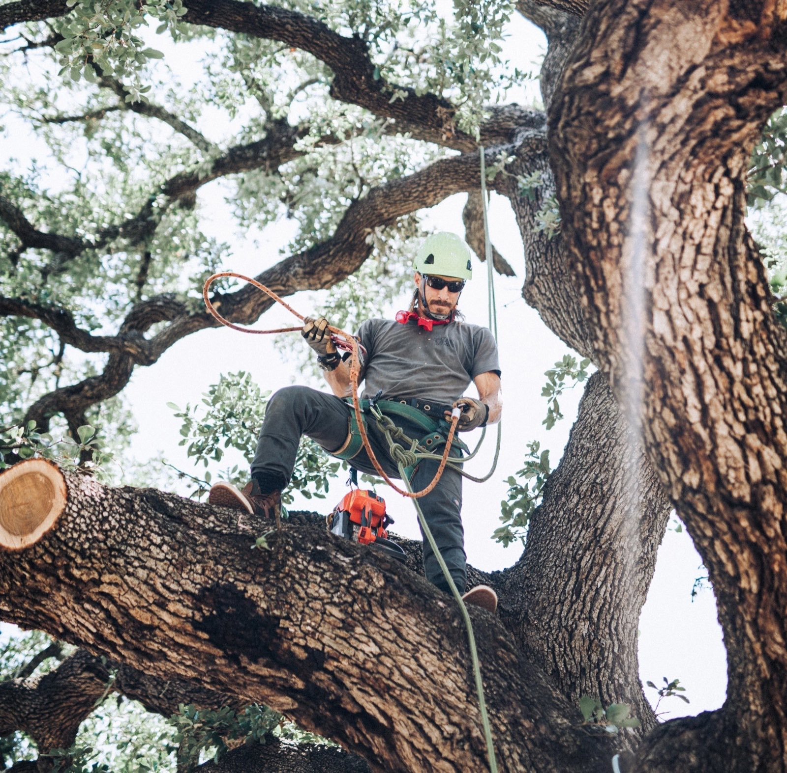

Bastrop County · Post Oak Savannah
Tree service in Smithville, Texas
A Colorado River town that has been a designated Tree City for years, with a canopy it's proud of.
Same-day callback on estimates
About 45 minutes from me in Kyle. Smithville sits on the Post Oak Savannah, which is what decides how trees behave here. Trimming starts at $250, hazardous limb work at $500, removals quoted per tree, and haul-away is included in all of it.
What I see in Smithville yards
Smithville has both river bottom and pine — big bottomland hardwoods along the Colorado and loblolly up on the sand. The old shade trees over the historic district are the kind of thing where careful reduction beats removal almost every time.
The trees I get called about in Smithville
Both bottomland hardwoods along the Colorado — pecan, sycamore, cottonwood — and loblolly pine up on the sand. The old shade trees over the historic district are the ones I care most about, and they're the ones where careful reduction beats removal almost every time. The mature shade trees through the older streets are the ones worth real care, and for those the conversation is often about cabling and bracing rather than cutting. A big old tree with a fork you don't trust can sometimes be supported with hardware installed high in the canopy instead of losing half its crown. It isn't a permanent fix and it needs inspecting, but it buys a lot of years.
How to tell these species apart, and what goes wrong with each one.
The ground underneath: Post Oak Savannah
Thin acid sandy loam over a dense mottled claypan. Post oak and blackjack oak dominate because they tolerate it. Water perches after a hard rain and then disappears in a drought, and that cycling is hard on trees.
Permits in Smithville
I haven't read Smithville's ordinance closely enough to summarize it here, and I'm not going to guess at a rule that could cost you a mitigation bill. Call the city's planning or development services department and ask two questions: what trunk diameter triggers a permit, and is there a protected species list.
I have verified the rules for Austin, Kyle, Buda and Dripping Springs — those are written up here, along with how to measure your trunk properly, which every one of these ordinances depends on.
Working on a Smithville property
Historic-district lots are moderate and tidy, with normal access. River lots mean soft ground. Forty-five minutes out. Colorado River bottom on one side and loblolly pine up on the sand on the other, forty-five minutes out. The historic streets are tighter than the newer parts of town, so limbs there come down on ropes.
Questions I get from Smithville
An old shade tree over my historic house looks risky. Must it go?
Usually not. Reducing end-weight and clearing deadwood addresses the actual hazard on most mature shade trees. Removal is for structural failure, and a big old tree is worth a real assessment before anyone reaches for that.
Do you work on pine and hardwood differently?
Yes, substantially. Pine can't regenerate from old wood and seals cuts differently, so pruning is more conservative and better timed. Treating a pine like a live oak is a common and expensive mistake.
Can a split trunk be saved instead of removed?
Sometimes. If the union is cracked but the tree is otherwise sound, cabling high in the canopy to limit how far the two halves can move apart can keep it standing for years. It's not a repair — the crack doesn't knit — it's a support system, and it needs looking at periodically. On a tree worth keeping it's a genuine alternative to removal.
Getting me out to Smithville
Smithville is about a 45-minute run for me. At that distance it works best batched with other work out that way, so give me a little notice if it isn’t urgent. Call or text me a photo with something in frame for scale and I can usually give you a number without driving out. Estimates are free either way.
One rule that applies everywhere, including here: don't prune oaks between February 1 and June 30. Here's why.

Smithville at a glance
County: Bastrop
Ground: Post Oak Savannah
From Kyle: 45 min
Trims from: $250
Tree Trimming & Pruning
Tree Removal
Stump Grinding
Hazardous Limbs & Storm Damage
Nearby
Bastrop · Cedar Creek · Elgin · Woodcreek · all 49 towns
Tree work in Smithville?
Text me a photo. I’ll tell you what it needs and what it costs.
Same-day callback on estimates
Call or text before 5pm on a weekday and you'll hear back from me the same day. Not an answering service — me.